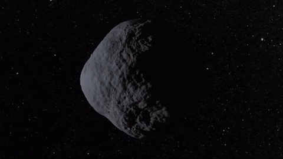
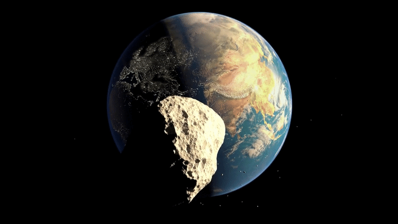

COMET
A comet is an icy, small Solar System body that, when passing close to the Sun, warms and begins to release gases, a process that is called outgassing. This produces a visible atmosphere or coma, and sometimes also a tail. These phenomena are due to the effects of solar radiation and the solar wind acting upon the nucleus of the comet. Comet nuclei range from a few hundred meters to tens of kilometers across and are composed of loose collections of ice, dust, and small rocky particles.